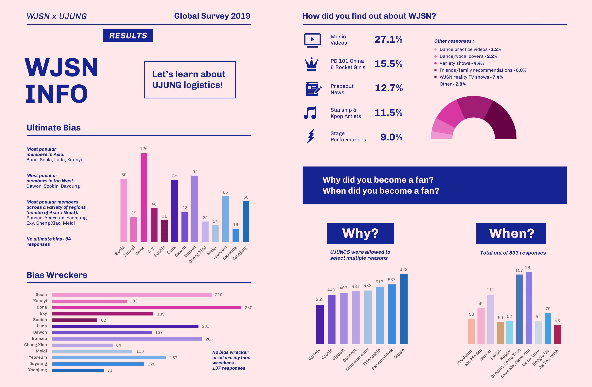
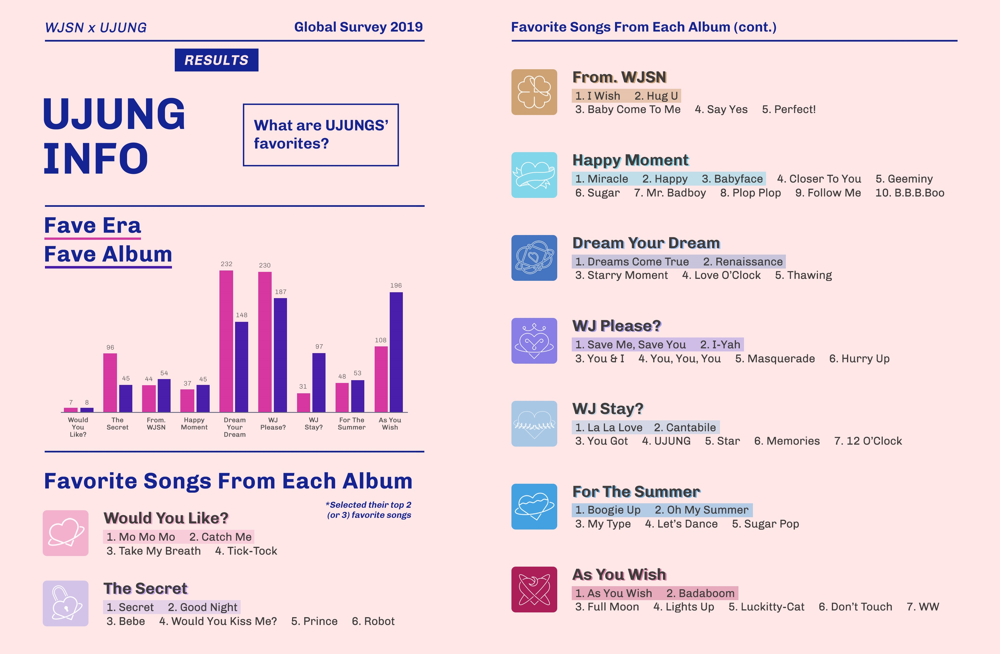
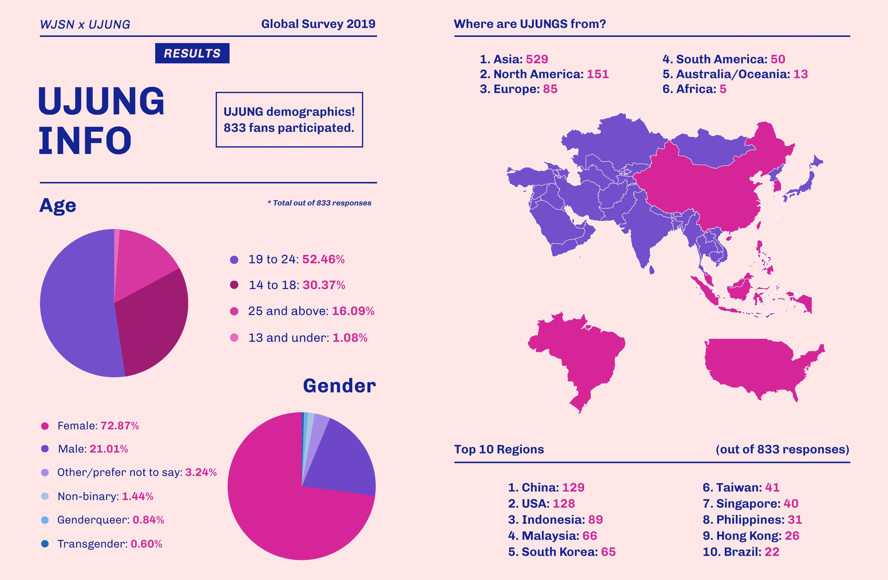
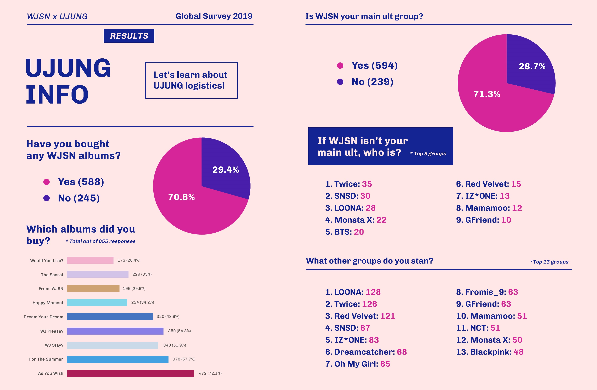
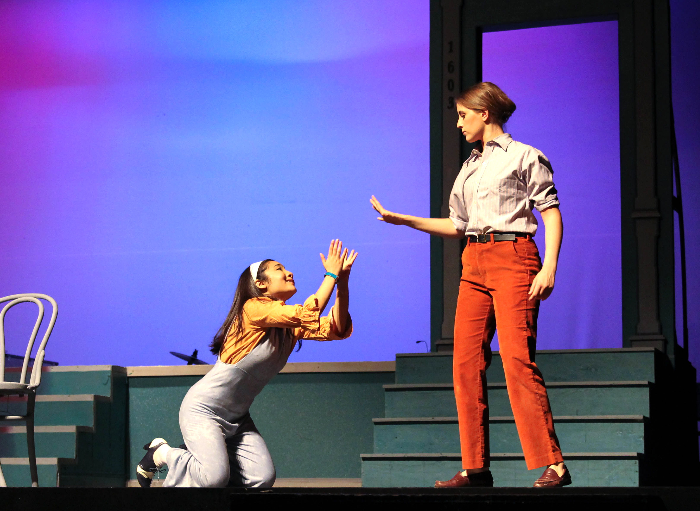
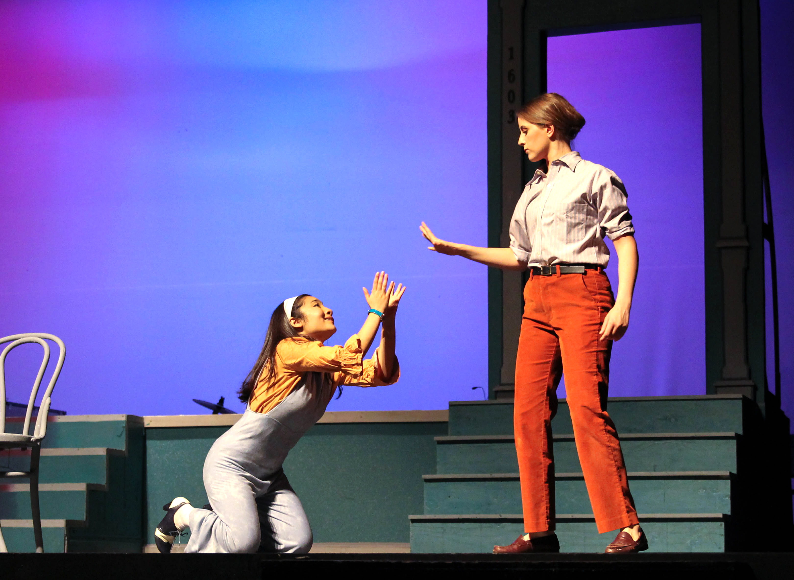

WJSN: fan survey data visualization
I conducted a global survey in 2019 among UJUNGs, the fandom for K-pop girl group WJSN/Cosmic Girls. The survey was open for 7 days on Google Forms. I compiled the data from auto-generated charts and individual responses to identify patterns and top responses.




 
